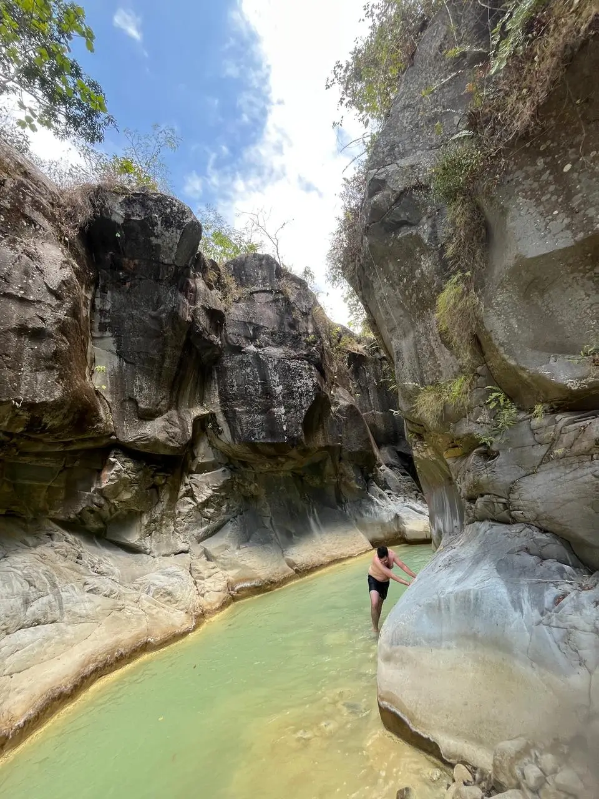

Mangku Sakti Waterfall merupakan salah satu destinasi wisata alam tersembunyi yang menawarkan pemandangan spektakuler di Pulau Lombok. Terletak di Desa Sajang, Kecamatan Sembalun, Kabupaten Lombok Timur, Nusa Tenggara Barat (NTB), air terjun ini menjadi pilihan sempurna untuk melengkapi petualangan Anda setelah mendaki Gunung Rinjani.
Daya Tarik Mangku Sakti Waterfall
Air Terjun Mangku Sakti menyuguhkan panorama alam yang begitu berbeda dari air terjun pada umumnya. Keunikan utamanya terletak pada aliran airnya yang memiliki warna hijau toska kebiruan yang sangat memesona. Warna ini tercipta secara alami dari kandungan belerang (sulfur) yang mengalir langsung dari kawah Gunung Rinjani.
Kandungan sulfur dalam air tidak hanya memberikan gradasi warna air yang eksotis di antara celah ngarai bebatuan putih, melainkan juga memberikan sensasi kesegaran alami serta khasiat relaksasi bagi pengunjung yang berendam.
Selain pemandangan tebing bebatuannya yang mirip grand canyon mini, udara di sekitar kawasan ini sangat sejuk, bersih, dan segar khas dataran tinggi Sembalun. Suasananya yang masih alami dan jauh dari keramaian kota menjadikannya tempat ideal untuk menenangkan pikiran serta berfoto estetik.
Harga Tiket Masuk & Parkir
- Tiket Masuk Objek Wisata Rp 5.000 / orang
- Parkir Sepeda Motor Rp 5.000 / unit
- Parkir Kendaraan Roda Empat (Mobil) Rp 10.000 / unit
Jam Buka & Waktu Kunjungan Terbaik
Mangku Sakti Waterfall beroperasi setiap hari mulai pukul 07.00 WITA hingga 17.00 WITA. Waktu kunjungan paling ideal adalah di pagi hari sekitar pukul 08.30 – 11.00 WITA saat cahaya matahari menyinari celah-celah tebing ngarai, membuat pendaran warna toska air belerang tampak berkilau maksimal untuk fotografi.